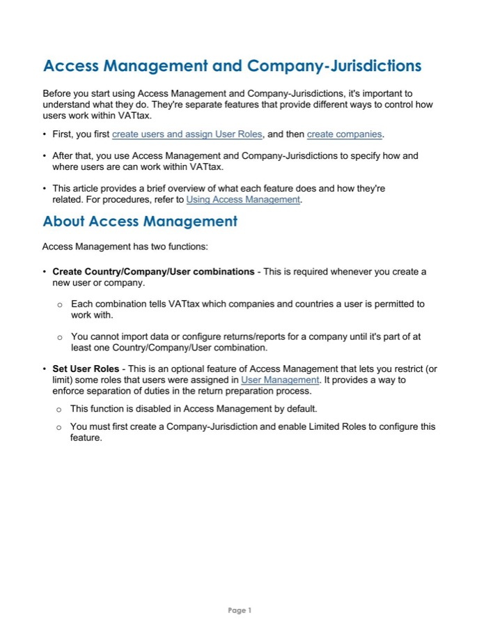
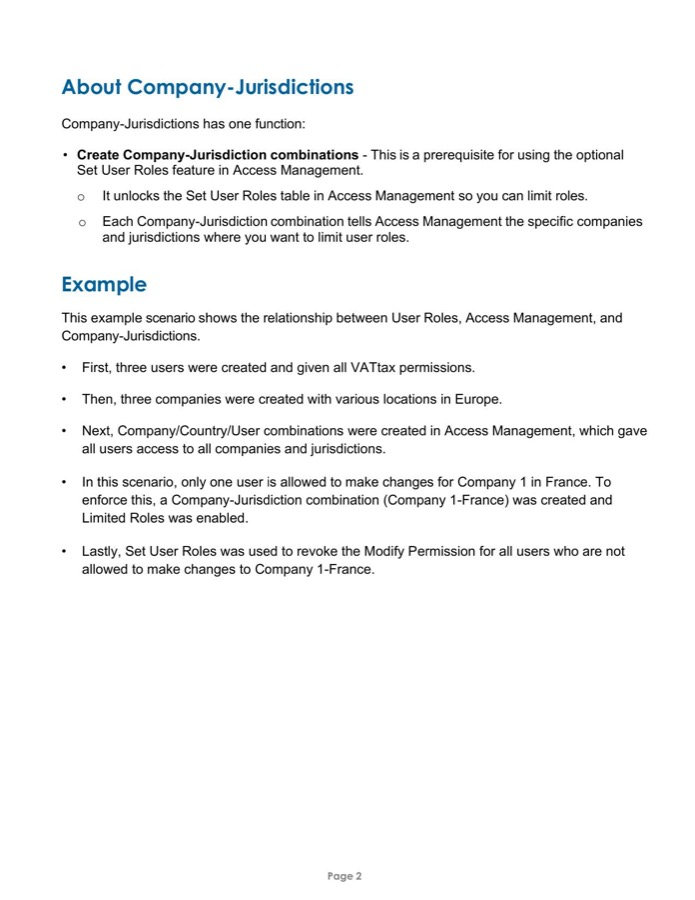
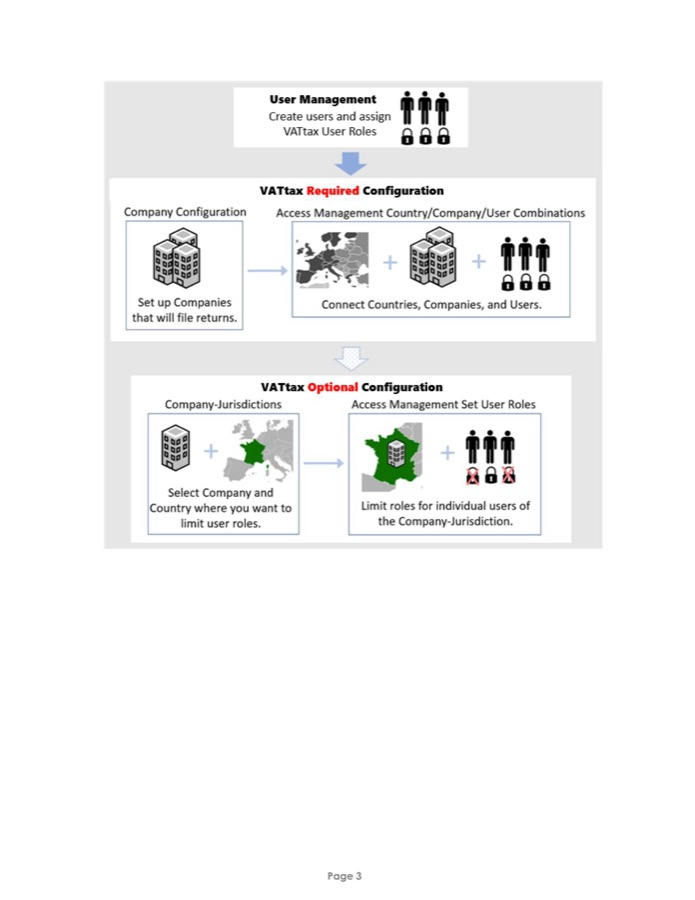

This introduction provides context for a procedure by using an example and diagram to explain two features that control overlapping settings. I worked closely with developers and product managers to identify and address potential areas of user confusion.
The piece walks through a single worked example (three users, three companies, one restricted jurisdiction) to show how two related features hand off to each other, before pointing readers to the full procedure for hands-on steps.


